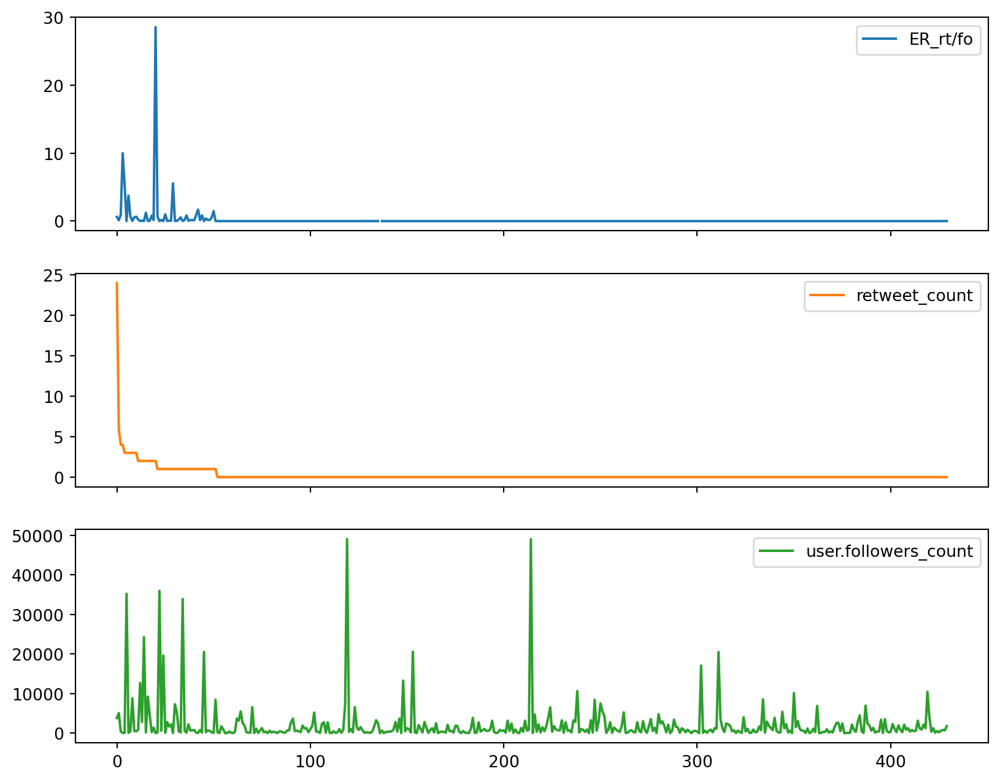

Code
import pandas as pd # 必须先导入 pandas 图书馆| created_at | utc_time | mentions | text | url | retweet_count | favorite_count | user | user.location | user.followers_count | user.friends_count | user.created_at | user.favourites_count | user.verified | |
|---|---|---|---|---|---|---|---|---|---|---|---|---|---|---|
| 0 | 06/05/2020 | 11:11:49 | NaN | NINE SPICES?????????????????\n?9??SPICE????NIN... | https://t.co/wddjIaJTcD | 24 | 12 | 9spices | ??????????2-1-2 HANROKU??B1 | 3820 | 1961 | 10/02/2010 | 296 | False |
| 1 | 07/07/2020 | 08:08:54 | @lizzie_hubbard2 @JetsettersFlyin @suziday123 ... | Thanks for the invite to join #TravelWinePart... | https://t.co/6Z7GgkJE8v | 6 | 17 | ExpressionsSA | Cape Town South Africa | 5088 | 5284 | 24/06/2011 | 15625 | False |
| 2 | 31/03/2020 | 13:39:02 | @craftbeerncl! @RidgesideBrewer @Manjitskitche... | Lovely folk #Leeds delivered a mixed box of th... | https://t.co/XXsNBqu3ix | 4 | 8 | LeftyRedCat | Leeds, Yorkshire, The North. | 446 | 1583 | 22/06/2014 | 15457 | False |
| 3 | 29/05/2020 | 20:58:17 | @StCannas @keralankaravan | the perfect evening guys! Thanks for the amaz... | https://t.co/3Ec1zryIlO | 4 | 15 | lukeybabeee | Wales, United Kingdom | 40 | 242 | 10/08/2013 | 73 | False |
| 4 | 28/11/2020 | 04:46:37 | @yooneedmorejodi | Among other yummy treats: curry goat dumplings... | https://t.co/CHql64ZpIN | 3 | 4 | BitsAndBikkles | Jamaica | 56 | 2 | 20/07/2020 | 8 | False |
| ... | ... | ... | ... | ... | ... | ... | ... | ... | ... | ... | ... | ... | ... | ... |
| 425 | 30/12/2020 | 23:45:00 | @Photos_in_Chile | This Alturis Muller Thurgau will make you kick... | https://t.co/TKqzhFmgHi | 0 | 1 | kitty_litter_1 | NaN | 210 | 523 | 26/06/2012 | 19994 | False |
| 426 | 30/08/2020 | 23:54:19 | @jesshousty @WilliamHousty | I just made zucchini blossoms fried in a curry... | https://t.co/WRIeWKVQbE | 0 | 1 | mrauliuk | Treaty 1 | 599 | 576 | 12/06/2014 | 3264 | False |
| 427 | 04/03/2020 | 23:55:19 | @beer_porter @siretoknote | ??????????????????????????????????????????????... | https://t.co/Rd2xiyo6uk | 0 | 1 | comin_curry | Kushiro Hokkaido Japan | 820 | 938 | 03/04/2011 | 41872 | False |
| 428 | 10/08/2020 | 23:55:38 | NaN | Made the terrible horrible no-good mistake of ... | https://t.co/AF23qFRBTv | 0 | 3 | elizvogt | NYC now, Texas forever | 687 | 1105 | 07/03/2011 | 39909 | False |
| 429 | 07/03/2020 | 23:59:42 | NaN | This is how I'm celebrating tonight y'all! Bee... | https://t.co/Fh7wRYCguR | 0 | 30 | Rose262 | Atlanta, GA | 1776 | 1121 | 10/05/2009 | 30246 | False |
430 rows × 14 columns
# 用 df.dropna() 函数清除 NA 值 (函数=function)
df_ = df.dropna(subset=['text','retweet_count']) # df_ 是演示用的 dropna() 后的 df_
# df.dropna() 函数，括号内不填写任何参数 (parameter) 的话，默认直接删除 df 内所有包含 NA 值的【行】
#【subset 参数】
# 需要 dropna 的列 (column) 或列名 (label of a coloumn)，在这些【列】中每个 NA 值所在的【整行】都将被 drop
# 可以写 df.dropna(subset=['text','retweet_count']) ；或者把中括号改成小括号：df.dropna(subset=('text','user.location'))
# 小括号内的 'xxx','yyy'... 代表 labels of columns，而中括号代表单个或多个列 (用 list 表示的列)
# ⭕【注意】
# 预处理数据的时候，不必直接 drop 所有的 NA值。为了确保数据的准确性，可以只去除需要用于分析的【列】的 NA值 (所在的行)
# 例如，当我们只需要分析 “文本内容” 和 “转发数量” 的时候，只需要设定 subset 参数为这两个特定的【列】即可df.fillna() 函数直接填充所有 NA 位| created_at | utc_time | mentions | text | url | retweet_count | favorite_count | user | user.location | user.followers_count | user.friends_count | user.created_at | user.favourites_count | user.verified | |
|---|---|---|---|---|---|---|---|---|---|---|---|---|---|---|
| 0 | 06/05/2020 | 11:11:49 | No Mentioned User | NINE SPICES?????????????????\n?9??SPICE????NIN... | https://t.co/wddjIaJTcD | 24 | 12 | 9spices | ??????????2-1-2 HANROKU??B1 | 3820 | 1961 | 10/02/2010 | 296 | False |
| 1 | 07/07/2020 | 08:08:54 | @lizzie_hubbard2 @JetsettersFlyin @suziday123 ... | Thanks for the invite to join #TravelWinePart... | https://t.co/6Z7GgkJE8v | 6 | 17 | ExpressionsSA | Cape Town South Africa | 5088 | 5284 | 24/06/2011 | 15625 | False |
| 2 | 31/03/2020 | 13:39:02 | @craftbeerncl! @RidgesideBrewer @Manjitskitche... | Lovely folk #Leeds delivered a mixed box of th... | https://t.co/XXsNBqu3ix | 4 | 8 | LeftyRedCat | Leeds, Yorkshire, The North. | 446 | 1583 | 22/06/2014 | 15457 | False |
| 3 | 29/05/2020 | 20:58:17 | @StCannas @keralankaravan | the perfect evening guys! Thanks for the amaz... | https://t.co/3Ec1zryIlO | 4 | 15 | lukeybabeee | Wales, United Kingdom | 40 | 242 | 10/08/2013 | 73 | False |
| 4 | 28/11/2020 | 04:46:37 | @yooneedmorejodi | Among other yummy treats: curry goat dumplings... | https://t.co/CHql64ZpIN | 3 | 4 | BitsAndBikkles | Jamaica | 56 | 2 | 20/07/2020 | 8 | False |
| ... | ... | ... | ... | ... | ... | ... | ... | ... | ... | ... | ... | ... | ... | ... |
| 425 | 30/12/2020 | 23:45:00 | @Photos_in_Chile | This Alturis Muller Thurgau will make you kick... | https://t.co/TKqzhFmgHi | 0 | 1 | kitty_litter_1 | NaN | 210 | 523 | 26/06/2012 | 19994 | False |
| 426 | 30/08/2020 | 23:54:19 | @jesshousty @WilliamHousty | I just made zucchini blossoms fried in a curry... | https://t.co/WRIeWKVQbE | 0 | 1 | mrauliuk | Treaty 1 | 599 | 576 | 12/06/2014 | 3264 | False |
| 427 | 04/03/2020 | 23:55:19 | @beer_porter @siretoknote | ??????????????????????????????????????????????... | https://t.co/Rd2xiyo6uk | 0 | 1 | comin_curry | Kushiro Hokkaido Japan | 820 | 938 | 03/04/2011 | 41872 | False |
| 428 | 10/08/2020 | 23:55:38 | No Mentioned User | Made the terrible horrible no-good mistake of ... | https://t.co/AF23qFRBTv | 0 | 3 | elizvogt | NYC now, Texas forever | 687 | 1105 | 07/03/2011 | 39909 | False |
| 429 | 07/03/2020 | 23:59:42 | No Mentioned User | This is how I'm celebrating tonight y'all! Bee... | https://t.co/Fh7wRYCguR | 0 | 30 | Rose262 | Atlanta, GA | 1776 | 1121 | 10/05/2009 | 30246 | False |
430 rows × 14 columns
df.replace() 更换特定值| created_at | utc_time | mentions | text | url | retweet_count | favorite_count | user | user.location | user.followers_count | user.friends_count | user.created_at | user.favourites_count | user.verified | |
|---|---|---|---|---|---|---|---|---|---|---|---|---|---|---|
| 0 | 06/05/2020 | 11:11:49 | 0 | NINE SPICES?????????????????\n?9??SPICE????NIN... | https://t.co/wddjIaJTcD | 24 | 12 | 9spices | ??????????2-1-2 HANROKU??B1 | 3820 | 1961 | 10/02/2010 | 296 | False |
| 1 | 07/07/2020 | 08:08:54 | @lizzie_hubbard2 @JetsettersFlyin @suziday123 ... | Thanks for the invite to join #TravelWinePart... | https://t.co/6Z7GgkJE8v | 6 | 17 | ExpressionsSA | Cape Town South Africa | 5088 | 5284 | 24/06/2011 | 15625 | False |
| 2 | 31/03/2020 | 13:39:02 | @craftbeerncl! @RidgesideBrewer @Manjitskitche... | Lovely folk #Leeds delivered a mixed box of th... | https://t.co/XXsNBqu3ix | 4 | 8 | LeftyRedCat | Leeds, Yorkshire, The North. | 446 | 1583 | 22/06/2014 | 15457 | False |
| 3 | 29/05/2020 | 20:58:17 | @StCannas @keralankaravan | the perfect evening guys! Thanks for the amaz... | https://t.co/3Ec1zryIlO | 4 | 15 | lukeybabeee | Wales, United Kingdom | 40 | 242 | 10/08/2013 | 73 | False |
| 4 | 28/11/2020 | 04:46:37 | @yooneedmorejodi | Among other yummy treats: curry goat dumplings... | https://t.co/CHql64ZpIN | 3 | 4 | BitsAndBikkles | Jamaica | 56 | 2 | 20/07/2020 | 8 | False |
| ... | ... | ... | ... | ... | ... | ... | ... | ... | ... | ... | ... | ... | ... | ... |
| 425 | 30/12/2020 | 23:45:00 | @Photos_in_Chile | This Alturis Muller Thurgau will make you kick... | https://t.co/TKqzhFmgHi | 0 | 1 | kitty_litter_1 | NaN | 210 | 523 | 26/06/2012 | 19994 | False |
| 426 | 30/08/2020 | 23:54:19 | @jesshousty @WilliamHousty | I just made zucchini blossoms fried in a curry... | https://t.co/WRIeWKVQbE | 0 | 1 | mrauliuk | Treaty 1 | 599 | 576 | 12/06/2014 | 3264 | False |
| 427 | 04/03/2020 | 23:55:19 | @beer_porter @siretoknote | ??????????????????????????????????????????????... | https://t.co/Rd2xiyo6uk | 0 | 1 | comin_curry | Kushiro Hokkaido Japan | 820 | 938 | 03/04/2011 | 41872 | False |
| 428 | 10/08/2020 | 23:55:38 | 0 | Made the terrible horrible no-good mistake of ... | https://t.co/AF23qFRBTv | 0 | 3 | elizvogt | NYC now, Texas forever | 687 | 1105 | 07/03/2011 | 39909 | False |
| 429 | 07/03/2020 | 23:59:42 | 0 | This is how I'm celebrating tonight y'all! Bee... | https://t.co/Fh7wRYCguR | 0 | 30 | Rose262 | Atlanta, GA | 1776 | 1121 | 10/05/2009 | 30246 | False |
430 rows × 14 columns
df.rename() 函数重命名| date | utc_time | mentions | content | url | retweet_count | favorite_count | user | user.location | user.followers_count | user.friends_count | user.created_at | user.favourites_count | user.verified | |
|---|---|---|---|---|---|---|---|---|---|---|---|---|---|---|
| 0 | 06/05/2020 | 11:11:49 | 0 | NINE SPICES?????????????????\n?9??SPICE????NIN... | https://t.co/wddjIaJTcD | 24 | 12 | 9spices | ??????????2-1-2 HANROKU??B1 | 3820 | 1961 | 10/02/2010 | 296 | False |
| 1 | 07/07/2020 | 08:08:54 | @lizzie_hubbard2 @JetsettersFlyin @suziday123 ... | Thanks for the invite to join #TravelWinePart... | https://t.co/6Z7GgkJE8v | 6 | 17 | ExpressionsSA | Cape Town South Africa | 5088 | 5284 | 24/06/2011 | 15625 | False |
| 2 | 31/03/2020 | 13:39:02 | @craftbeerncl! @RidgesideBrewer @Manjitskitche... | Lovely folk #Leeds delivered a mixed box of th... | https://t.co/XXsNBqu3ix | 4 | 8 | LeftyRedCat | Leeds, Yorkshire, The North. | 446 | 1583 | 22/06/2014 | 15457 | False |
| 3 | 29/05/2020 | 20:58:17 | @StCannas @keralankaravan | the perfect evening guys! Thanks for the amaz... | https://t.co/3Ec1zryIlO | 4 | 15 | lukeybabeee | Wales, United Kingdom | 40 | 242 | 10/08/2013 | 73 | False |
| 4 | 28/11/2020 | 04:46:37 | @yooneedmorejodi | Among other yummy treats: curry goat dumplings... | https://t.co/CHql64ZpIN | 3 | 4 | BitsAndBikkles | Jamaica | 56 | 2 | 20/07/2020 | 8 | False |
| ... | ... | ... | ... | ... | ... | ... | ... | ... | ... | ... | ... | ... | ... | ... |
| 425 | 30/12/2020 | 23:45:00 | @Photos_in_Chile | This Alturis Muller Thurgau will make you kick... | https://t.co/TKqzhFmgHi | 0 | 1 | kitty_litter_1 | NaN | 210 | 523 | 26/06/2012 | 19994 | False |
| 426 | 30/08/2020 | 23:54:19 | @jesshousty @WilliamHousty | I just made zucchini blossoms fried in a curry... | https://t.co/WRIeWKVQbE | 0 | 1 | mrauliuk | Treaty 1 | 599 | 576 | 12/06/2014 | 3264 | False |
| 427 | 04/03/2020 | 23:55:19 | @beer_porter @siretoknote | ??????????????????????????????????????????????... | https://t.co/Rd2xiyo6uk | 0 | 1 | comin_curry | Kushiro Hokkaido Japan | 820 | 938 | 03/04/2011 | 41872 | False |
| 428 | 10/08/2020 | 23:55:38 | 0 | Made the terrible horrible no-good mistake of ... | https://t.co/AF23qFRBTv | 0 | 3 | elizvogt | NYC now, Texas forever | 687 | 1105 | 07/03/2011 | 39909 | False |
| 429 | 07/03/2020 | 23:59:42 | 0 | This is how I'm celebrating tonight y'all! Bee... | https://t.co/Fh7wRYCguR | 0 | 30 | Rose262 | Atlanta, GA | 1776 | 1121 | 10/05/2009 | 30246 | False |
430 rows × 14 columns
| date | utc_time | mentions | content | url | retweet_count | favorite_count | user | user.location | user.followers_count | user.friends_count | user.created_at | user.favourites_count | user.verified | |
|---|---|---|---|---|---|---|---|---|---|---|---|---|---|---|
| 0 | 06/05/2020 | 11:11:49 | 0 | NINE SPICES?????????????????\n?9??SPICE????NIN... | https://t.co/wddjIaJTcD | 24 | 12 | 9spices | ??????????2-1-2 HANROKU??B1 | 3820 | 1961 | 10/02/2010 | 296 | False |
| 1 | 07/07/2020 | 08:08:54 | @lizzie_hubbard2 @JetsettersFlyin @suziday123 ... | Thanks for the invite to join #TravelWinePart... | https://t.co/6Z7GgkJE8v | 6 | 17 | ExpressionsSA | Cape Town South Africa | 5088 | 5284 | 24/06/2011 | 15625 | False |
| 2 | 31/03/2020 | 13:39:02 | @craftbeerncl! @RidgesideBrewer @Manjitskitche... | Lovely folk #Leeds delivered a mixed box of th... | https://t.co/XXsNBqu3ix | 4 | 8 | LeftyRedCat | Leeds, Yorkshire, The North. | 446 | 1583 | 22/06/2014 | 15457 | False |
| 3 | 29/05/2020 | 20:58:17 | @StCannas @keralankaravan | the perfect evening guys! Thanks for the amaz... | https://t.co/3Ec1zryIlO | 4 | 15 | lukeybabeee | Wales, United Kingdom | 40 | 242 | 10/08/2013 | 73 | False |
| 4 | 28/11/2020 | 04:46:37 | @yooneedmorejodi | Among other yummy treats: curry goat dumplings... | https://t.co/CHql64ZpIN | 3 | 4 | BitsAndBikkles | Jamaica | 56 | 2 | 20/07/2020 | 8 | False |
| ... | ... | ... | ... | ... | ... | ... | ... | ... | ... | ... | ... | ... | ... | ... |
| 425 | 30/12/2020 | 23:45:00 | @Photos_in_Chile | This Alturis Muller Thurgau will make you kick... | https://t.co/TKqzhFmgHi | 0 | 1 | kitty_litter_1 | NaN | 210 | 523 | 26/06/2012 | 19994 | False |
| 426 | 30/08/2020 | 23:54:19 | @jesshousty @WilliamHousty | I just made zucchini blossoms fried in a curry... | https://t.co/WRIeWKVQbE | 0 | 1 | mrauliuk | Treaty 1 | 599 | 576 | 12/06/2014 | 3264 | False |
| 427 | 04/03/2020 | 23:55:19 | @beer_porter @siretoknote | ??????????????????????????????????????????????... | https://t.co/Rd2xiyo6uk | 0 | 1 | comin_curry | Kushiro Hokkaido Japan | 820 | 938 | 03/04/2011 | 41872 | False |
| 428 | 10/08/2020 | 23:55:38 | 0 | Made the terrible horrible no-good mistake of ... | https://t.co/AF23qFRBTv | 0 | 3 | elizvogt | NYC now, Texas forever | 687 | 1105 | 07/03/2011 | 39909 | False |
| 429 | 07/03/2020 | 23:59:42 | 0 | This is how I'm celebrating tonight y'all! Bee... | https://t.co/Fh7wRYCguR | 0 | 30 | Rose262 | Atlanta, GA | 1776 | 1121 | 10/05/2009 | 30246 | False |
430 rows × 14 columns
| date | utc_time | mentions | content | url | retweet_count | favorite_count | user | user.location | user.followers_count | user.friends_count | user.created_at | user.favourites_count | user.verified | followers (1000s) | |
|---|---|---|---|---|---|---|---|---|---|---|---|---|---|---|---|
| 0 | 06/05/2020 | 11:11:49 | 0 | NINE SPICES?????????????????\n?9??SPICE????NIN... | https://t.co/wddjIaJTcD | 24 | 12 | 9spices | ??????????2-1-2 HANROKU??B1 | 3820 | 1961 | 10/02/2010 | 296 | False | 3.820 |
| 1 | 07/07/2020 | 08:08:54 | @lizzie_hubbard2 @JetsettersFlyin @suziday123 ... | Thanks for the invite to join #TravelWinePart... | https://t.co/6Z7GgkJE8v | 6 | 17 | ExpressionsSA | Cape Town South Africa | 5088 | 5284 | 24/06/2011 | 15625 | False | 5.088 |
| 2 | 31/03/2020 | 13:39:02 | @craftbeerncl! @RidgesideBrewer @Manjitskitche... | Lovely folk #Leeds delivered a mixed box of th... | https://t.co/XXsNBqu3ix | 4 | 8 | LeftyRedCat | Leeds, Yorkshire, The North. | 446 | 1583 | 22/06/2014 | 15457 | False | 0.446 |
| 3 | 29/05/2020 | 20:58:17 | @StCannas @keralankaravan | the perfect evening guys! Thanks for the amaz... | https://t.co/3Ec1zryIlO | 4 | 15 | lukeybabeee | Wales, United Kingdom | 40 | 242 | 10/08/2013 | 73 | False | 0.040 |
| 4 | 28/11/2020 | 04:46:37 | @yooneedmorejodi | Among other yummy treats: curry goat dumplings... | https://t.co/CHql64ZpIN | 3 | 4 | BitsAndBikkles | Jamaica | 56 | 2 | 20/07/2020 | 8 | False | 0.056 |
| ... | ... | ... | ... | ... | ... | ... | ... | ... | ... | ... | ... | ... | ... | ... | ... |
| 425 | 30/12/2020 | 23:45:00 | @Photos_in_Chile | This Alturis Muller Thurgau will make you kick... | https://t.co/TKqzhFmgHi | 0 | 1 | kitty_litter_1 | NaN | 210 | 523 | 26/06/2012 | 19994 | False | 0.210 |
| 426 | 30/08/2020 | 23:54:19 | @jesshousty @WilliamHousty | I just made zucchini blossoms fried in a curry... | https://t.co/WRIeWKVQbE | 0 | 1 | mrauliuk | Treaty 1 | 599 | 576 | 12/06/2014 | 3264 | False | 0.599 |
| 427 | 04/03/2020 | 23:55:19 | @beer_porter @siretoknote | ??????????????????????????????????????????????... | https://t.co/Rd2xiyo6uk | 0 | 1 | comin_curry | Kushiro Hokkaido Japan | 820 | 938 | 03/04/2011 | 41872 | False | 0.820 |
| 428 | 10/08/2020 | 23:55:38 | 0 | Made the terrible horrible no-good mistake of ... | https://t.co/AF23qFRBTv | 0 | 3 | elizvogt | NYC now, Texas forever | 687 | 1105 | 07/03/2011 | 39909 | False | 0.687 |
| 429 | 07/03/2020 | 23:59:42 | 0 | This is how I'm celebrating tonight y'all! Bee... | https://t.co/Fh7wRYCguR | 0 | 30 | Rose262 | Atlanta, GA | 1776 | 1121 | 10/05/2009 | 30246 | False | 1.776 |
430 rows × 15 columns
# 定义函数 calcER(EC, FC)，用于计算【效益比率(有效率)】
def calcER(EC, FC):
ER = (EC / FC) * 100 # 计算效益比率：效益率 = 有效成本/总成本 * 100 (一般是百分比，这里直接乘以 100 了)
return ER
# ⭕【计算效益比率】
# calcER = to calculate the ER value = 计算效益比率
# ER = Efficiency Ratio = 效益比率 (有效率)
# EC = Effective Cost = 有效成本（产生效益的成本）
# FC = Full Cost = 全成本/总成本0 0.628272
1 0.117925
2 0.896861
3 10.000000
4 5.357143
...
425 0.000000
426 0.000000
427 0.000000
428 0.000000
429 0.000000
Length: 430, dtype: float64| date | utc_time | mentions | content | url | retweet_count | favorite_count | user | user.location | user.followers_count | user.friends_count | user.created_at | user.favourites_count | user.verified | followers (1000s) | ER_rt/fo | |
|---|---|---|---|---|---|---|---|---|---|---|---|---|---|---|---|---|
| 0 | 06/05/2020 | 11:11:49 | 0 | NINE SPICES?????????????????\n?9??SPICE????NIN... | https://t.co/wddjIaJTcD | 24 | 12 | 9spices | ??????????2-1-2 HANROKU??B1 | 3820 | 1961 | 10/02/2010 | 296 | False | 3.820 | 0.628272 |
| 1 | 07/07/2020 | 08:08:54 | @lizzie_hubbard2 @JetsettersFlyin @suziday123 ... | Thanks for the invite to join #TravelWinePart... | https://t.co/6Z7GgkJE8v | 6 | 17 | ExpressionsSA | Cape Town South Africa | 5088 | 5284 | 24/06/2011 | 15625 | False | 5.088 | 0.117925 |
| 2 | 31/03/2020 | 13:39:02 | @craftbeerncl! @RidgesideBrewer @Manjitskitche... | Lovely folk #Leeds delivered a mixed box of th... | https://t.co/XXsNBqu3ix | 4 | 8 | LeftyRedCat | Leeds, Yorkshire, The North. | 446 | 1583 | 22/06/2014 | 15457 | False | 0.446 | 0.896861 |
| 3 | 29/05/2020 | 20:58:17 | @StCannas @keralankaravan | the perfect evening guys! Thanks for the amaz... | https://t.co/3Ec1zryIlO | 4 | 15 | lukeybabeee | Wales, United Kingdom | 40 | 242 | 10/08/2013 | 73 | False | 0.040 | 10.000000 |
| 4 | 28/11/2020 | 04:46:37 | @yooneedmorejodi | Among other yummy treats: curry goat dumplings... | https://t.co/CHql64ZpIN | 3 | 4 | BitsAndBikkles | Jamaica | 56 | 2 | 20/07/2020 | 8 | False | 0.056 | 5.357143 |
| ... | ... | ... | ... | ... | ... | ... | ... | ... | ... | ... | ... | ... | ... | ... | ... | ... |
| 425 | 30/12/2020 | 23:45:00 | @Photos_in_Chile | This Alturis Muller Thurgau will make you kick... | https://t.co/TKqzhFmgHi | 0 | 1 | kitty_litter_1 | NaN | 210 | 523 | 26/06/2012 | 19994 | False | 0.210 | 0.000000 |
| 426 | 30/08/2020 | 23:54:19 | @jesshousty @WilliamHousty | I just made zucchini blossoms fried in a curry... | https://t.co/WRIeWKVQbE | 0 | 1 | mrauliuk | Treaty 1 | 599 | 576 | 12/06/2014 | 3264 | False | 0.599 | 0.000000 |
| 427 | 04/03/2020 | 23:55:19 | @beer_porter @siretoknote | ??????????????????????????????????????????????... | https://t.co/Rd2xiyo6uk | 0 | 1 | comin_curry | Kushiro Hokkaido Japan | 820 | 938 | 03/04/2011 | 41872 | False | 0.820 | 0.000000 |
| 428 | 10/08/2020 | 23:55:38 | 0 | Made the terrible horrible no-good mistake of ... | https://t.co/AF23qFRBTv | 0 | 3 | elizvogt | NYC now, Texas forever | 687 | 1105 | 07/03/2011 | 39909 | False | 0.687 | 0.000000 |
| 429 | 07/03/2020 | 23:59:42 | 0 | This is how I'm celebrating tonight y'all! Bee... | https://t.co/Fh7wRYCguR | 0 | 30 | Rose262 | Atlanta, GA | 1776 | 1121 | 10/05/2009 | 30246 | False | 1.776 | 0.000000 |
430 rows × 16 columns
# 创建简单图表来大致查看【rt值】、【fo值】和【rt/fo值】的关系
df[['ER_rt/fo','retweet_count','user.followers_count']].plot(subplots=True, figsize=(10,8))
# ⭕ df[['列1','列2','列3']] 代表选择了这三个列
# ⭕【subplots 参数】
# 默认 subplots = False，即，所有列的图像都显示在同一个图标里
# subplots = True 之后，分别给每个列单独创建一个图标
# ⭕【kind 参数】
# 不设置 kind 参数的话，默认 kind = 'line'，自动生成折线图
# 柱状图：kind = 'bar'
# 直方图：kind = 'hist'
# 散点图：kind = 'scatter'
# 饼状图：kind = 'pie'
# ⭕【figsize 参数】
# figsize = (图表宽度, 图表高度) # 填数字，单位为英寸array([<Axes: >, <Axes: >, <Axes: >], dtype=object)
# 用 df.duplicated() 函数筛选【同一个用户】在【同一天】【发了复数条贴】的【行】
df[df.duplicated(subset=['user','date'], keep=False)]
# ⭕subset = ['user', 'date'] 代表判断【重复值】时，必须满足【这两列同时重复】
# 比如：
# ___|_user__|__date__|__
# 0 | 小A | 周四 | A4
# 1 | 小B | 周四 | B4
# 2 | 小A | 周五 | A5
# 3 | 小A | 周四 | A4
# 同时满足 user 和 date 都相等的【重复值】行是 0行 和 3行| date | utc_time | mentions | content | url | retweet_count | favorite_count | user | user.location | user.followers_count | user.friends_count | user.created_at | user.favourites_count | user.verified | followers (1000s) | ER_rt/fo | |
|---|---|---|---|---|---|---|---|---|---|---|---|---|---|---|---|---|
| 7 | 29/02/2020 | 14:42:01 | @MCRCycleSam @CatrionaSwanson @bricycle @marty... | A gathering of UK transport activists; cycle s... | https://t.co/OcyyKkhmUh | 3 | 15 | davelostdave | somewhere | 459 | 1287 | 15/06/2009 | 23700 | False | 0.459 | 0.653595 |
| 10 | 29/02/2020 | 23:41:58 | @CatrionaSwanson @Chris_Boardman @Chris_Boardman | Maybe we could put the spotlight on #Bradford ... | https://t.co/0ExO7wr1ld | 3 | 11 | davelostdave | somewhere | 459 | 1287 | 15/06/2009 | 23700 | False | 0.459 | 0.653595 |
| 57 | 08/02/2020 | 00:52:07 | @TOIFood | I made a unique chicken curry by using beer.. ... | https://t.co/RkoybcJ8ft | 0 | 1 | RecipeKiPotli | New Delhi, India | 12 | 32 | 03/02/2020 | 44 | False | 0.012 | 0.000000 |
| 60 | 08/02/2020 | 00:57:31 | @foodandwine | I made a unique chicken curry by using beer.. ... | https://t.co/RkoybcJ8ft | 0 | 0 | RecipeKiPotli | New Delhi, India | 12 | 32 | 03/02/2020 | 44 | False | 0.012 | 0.000000 |
| 103 | 16/12/2020 | 06:53:00 | @curry_x_beer | ????????????????????????????????????www\r\n\r\... | https://t.co/3p0g3pe6I2 | 0 | 2 | TsuyuriKumin5MT | ????? ???? ?????? | 379 | 491 | 01/01/2014 | 58885 | False | 0.379 | 0.000000 |
| 104 | 16/12/2020 | 06:57:53 | @curry_x_beer | ???w | https://t.co/jHN12BGiWX | 0 | 2 | TsuyuriKumin5MT | ????? ???? ?????? | 379 | 491 | 01/01/2014 | 58885 | False | 0.379 | 0.000000 |
| 107 | 07/07/2020 | 07:23:18 | @beer_usagi | ?????…???????…\r\n????????…\r\n???????\r\n????? | https://t.co/rFFeqGaVIU | 0 | 0 | akakuro_curry | ?????????2-11-4 ???? B1F | 2730 | 3863 | 24/08/2018 | 24660 | False | 2.730 | 0.000000 |
| 109 | 07/07/2020 | 07:27:06 | @beer_usagi | ????????? | https://t.co/EPiOnl6zyu | 0 | 1 | akakuro_curry | ?????????2-11-4 ???? B1F | 2730 | 3863 | 24/08/2018 | 24660 | False | 2.730 | 0.000000 |
| 115 | 11/04/2020 | 07:46:39 | @curry_x_beer | ???????…??\r\n???????????????????????…\r\n | https://t.co/BgkNj3a0fe | 0 | 0 | Friends_quail | NaN | 1020 | 1101 | 06/12/2015 | 126694 | False | 1.020 | 0.000000 |
| 121 | 11/04/2020 | 08:11:23 | @curry_x_beer | ???????????? | https://t.co/BwS1A7C1gM | 0 | 1 | Friends_quail | NaN | 1020 | 1101 | 06/12/2015 | 126694 | False | 1.020 | 0.000000 |
| 197 | 26/02/2020 | 13:14:07 | 0 | Another commemoration after the long Heritage ... | https://t.co/dJhefJTWzJ | 0 | 2 | mbe_curry | NaN | 123 | 48 | 20/03/2014 | 282 | False | 0.123 | 0.000000 |
| 201 | 26/02/2020 | 13:27:43 | @CinemaMuseum | Celebration after any long campaign, and what ... | https://t.co/9PA1VQk6G5 | 0 | 3 | mbe_curry | NaN | 123 | 48 | 20/03/2014 | 282 | False | 0.123 | 0.000000 |
| 303 | 06/10/2020 | 18:20:43 | @SuzyPelta @EmpressAle @FoodMarketingEx | It would be lovely to #WIN TWO bottles of \r\n... | https://t.co/tA6JIFupp8 | 0 | 0 | YCfan20 | Yorkshire and The Humber, Engl | 80 | 1099 | 06/09/2020 | 3212 | False | 0.080 | 0.000000 |
| 305 | 06/10/2020 | 18:22:33 | @SuzyPelta @EmpressAle @FoodMarketingEx | It would be lovely to #WIN TWO bottles of \r\n... | https://t.co/fYeWqbNIW6 | 0 | 0 | YCfan20 | Yorkshire and The Humber, Engl | 80 | 1099 | 06/09/2020 | 3212 | False | 0.080 | 0.000000 |
| 378 | 05/10/2020 | 20:37:49 | @SuzyPelta @EmpressAle @FoodMarketingEx | It would be lovely to #WIN TWO bottles of \r\n... | https://t.co/MgZUkK859y | 0 | 0 | YCfan20 | Yorkshire and The Humber, Engl | 80 | 1099 | 06/09/2020 | 3212 | False | 0.080 | 0.000000 |
| 379 | 05/10/2020 | 20:40:26 | @SuzyPelta @EmpressAle @FoodMarketingEx | It would be lovely to #WIN TWO bottles of \r\n... | https://t.co/IbhBNu4qX4 | 0 | 0 | YCfan20 | Yorkshire and The Humber, Engl | 80 | 1099 | 06/09/2020 | 3212 | False | 0.080 | 0.000000 |
| date | utc_time | mentions | content | url | retweet_count | favorite_count | user | user.location | user.followers_count | user.friends_count | user.created_at | user.favourites_count | user.verified | followers (1000s) | ER_rt/fo | |
|---|---|---|---|---|---|---|---|---|---|---|---|---|---|---|---|---|
| 0 | 06/05/2020 | 11:11:49 | 0 | NINE SPICES?????????????????\n?9??SPICE????NIN... | https://t.co/wddjIaJTcD | 24 | 12 | 9spices | ??????????2-1-2 HANROKU??B1 | 3820 | 1961 | 10/02/2010 | 296 | False | 3.820 | 0.628272 |
| 1 | 07/07/2020 | 08:08:54 | @lizzie_hubbard2 @JetsettersFlyin @suziday123 ... | Thanks for the invite to join #TravelWinePart... | https://t.co/6Z7GgkJE8v | 6 | 17 | ExpressionsSA | Cape Town South Africa | 5088 | 5284 | 24/06/2011 | 15625 | False | 5.088 | 0.117925 |
| 2 | 31/03/2020 | 13:39:02 | @craftbeerncl! @RidgesideBrewer @Manjitskitche... | Lovely folk #Leeds delivered a mixed box of th... | https://t.co/XXsNBqu3ix | 4 | 8 | LeftyRedCat | Leeds, Yorkshire, The North. | 446 | 1583 | 22/06/2014 | 15457 | False | 0.446 | 0.896861 |
| 3 | 29/05/2020 | 20:58:17 | @StCannas @keralankaravan | the perfect evening guys! Thanks for the amaz... | https://t.co/3Ec1zryIlO | 4 | 15 | lukeybabeee | Wales, United Kingdom | 40 | 242 | 10/08/2013 | 73 | False | 0.040 | 10.000000 |
| 5 | 01/07/2020 | 06:35:04 | 0 | Makanan yg paling dianggap deluxe dan disukai ... | https://t.co/jkcO3zaQvv | 3 | 21 | Mentimoen | NaN | 35214 | 596 | 28/05/2016 | 530 | False | 35.214 | 0.008519 |
| ... | ... | ... | ... | ... | ... | ... | ... | ... | ... | ... | ... | ... | ... | ... | ... | ... |
| 56 | 21/12/2020 | 00:40:48 | @DubiousEngineer @KempeneerVan @startrekcbs | Rimmer stole Lister's beer curry, traveled to... | https://t.co/4nDHg9jPcR | 0 | 1 | TheRealLuFeral | Where I feel like being. | 3 | 19 | 08/11/2020 | 202 | False | 0.003 | 0.000000 |
| 376 | 25/07/2020 | 20:34:17 | @TheWhiteHag | Ok lads...sorry we can’t be in Ballymote today... | https://t.co/JVnjY863kI | 0 | 1 | FoldingWheels | NaN | 2 | 16 | 20/05/2010 | 43 | False | 0.002 | 0.000000 |
| 208 | 12/09/2020 | 14:02:16 | @liamgallagher @liamgallagher | Curry after a few beers | https://t.co/xyX7Xh0xS9 | 0 | 0 | paddynpipes | NaN | 1 | 19 | 10/02/2020 | 59 | False | 0.001 | 0.000000 |
| 301 | 30/05/2020 | 18:18:36 | @skynewsSam | We did the other day. \r\nTonight it curry &am... | https://t.co/d0Ju7pmWDR | 0 | 1 | MikeCha81015561 | NaN | 1 | 41 | 14/05/2020 | 1535 | False | 0.001 | 0.000000 |
| 136 | 18/04/2020 | 09:43:58 | @SaturdayKitchen | our son is missing fish and chips, so we made ... | https://t.co/W7pN2eEGRn | 0 | 3 | cofton2 | NaN | 0 | 24 | 11/06/2010 | 9 | False | 0.000 | NaN |
430 rows × 16 columns
| 0 | 1 | 2 | 3 | 4 | 5 | 6 | 7 | 8 | 9 | ... | 420 | 421 | 422 | 423 | 424 | 425 | 426 | 427 | 428 | 429 | |
|---|---|---|---|---|---|---|---|---|---|---|---|---|---|---|---|---|---|---|---|---|---|
| date | 06/05/2020 | 07/07/2020 | 31/03/2020 | 29/05/2020 | 28/11/2020 | 01/07/2020 | 08/01/2020 | 29/02/2020 | 03/05/2020 | 16/01/2020 | ... | 10/04/2020 | 27/11/2020 | 09/12/2020 | 25/03/2020 | 25/06/2020 | 30/12/2020 | 30/08/2020 | 04/03/2020 | 10/08/2020 | 07/03/2020 |
| utc_time | 11:11:49 | 08:08:54 | 13:39:02 | 20:58:17 | 04:46:37 | 06:35:04 | 10:26:36 | 14:42:01 | 17:05:51 | 17:50:08 | ... | 23:23:26 | 23:31:09 | 23:32:06 | 23:36:02 | 23:38:41 | 23:45:00 | 23:54:19 | 23:55:19 | 23:55:38 | 23:59:42 |
| mentions | 0 | @lizzie_hubbard2 @JetsettersFlyin @suziday123 ... | @craftbeerncl! @RidgesideBrewer @Manjitskitche... | @StCannas @keralankaravan | @yooneedmorejodi | 0 | 0 | @MCRCycleSam @CatrionaSwanson @bricycle @marty... | @DrewPritchard | @Nellachops73 @MotorheadBeer @CameronsBrewery ... | ... | @ashley_collings | @101andyhibberd | @MariaMo71609443 @jckiker @ScottAdamsSays | @lonelyplanet | 0 | @Photos_in_Chile | @jesshousty @WilliamHousty | @beer_porter @siretoknote | 0 | 0 |
| content | NINE SPICES?????????????????\n?9??SPICE????NIN... | Thanks for the invite to join #TravelWinePart... | Lovely folk #Leeds delivered a mixed box of th... | the perfect evening guys! Thanks for the amaz... | Among other yummy treats: curry goat dumplings... | Makanan yg paling dianggap deluxe dan disukai ... | DJ??\r\n?????????(THE ACT WE ACT)\r\nIQUINE???... | A gathering of UK transport activists; cycle s... | many thanks again for #SalvageSundays enjoy yo... | has gone out for a curry so im having a beer! ... | ... | Lets say its a rather unsual place. Middle of ... | Just the two tonight Andy? Obviously the meeti... | The reason I read and study about health 7 day... | Lots of great meals from all over the world! ... | Not bad for a first time. Will just use rice i... | This Alturis Muller Thurgau will make you kick... | I just made zucchini blossoms fried in a curry... | ??????????????????????????????????????????????... | Made the terrible horrible no-good mistake of ... | This is how I'm celebrating tonight y'all! Bee... |
| url | https://t.co/wddjIaJTcD | https://t.co/6Z7GgkJE8v | https://t.co/XXsNBqu3ix | https://t.co/3Ec1zryIlO | https://t.co/CHql64ZpIN | https://t.co/jkcO3zaQvv | https://t.co/82mcqYbon7 | https://t.co/OcyyKkhmUh | https://t.co/h9rKtPhIk2\r\nAntiques Collectabl... | https://t.co/HwLDw9Nys7 | ... | https://t.co/kehHDSkSho | https://t.co/ajvsgjYZMz | https://t.co/qbzfUAWyR8 | https://t.co/boqkzogJDP | https://t.co/sb0494Cxqy | https://t.co/TKqzhFmgHi | https://t.co/WRIeWKVQbE | https://t.co/Rd2xiyo6uk | https://t.co/AF23qFRBTv | https://t.co/Fh7wRYCguR |
| retweet_count | 24 | 6 | 4 | 4 | 3 | 3 | 3 | 3 | 3 | 3 | ... | 0 | 0 | 0 | 0 | 0 | 0 | 0 | 0 | 0 | 0 |
| favorite_count | 12 | 17 | 8 | 15 | 4 | 21 | 3 | 15 | 11 | 14 | ... | 0 | 1 | 0 | 1 | 4 | 1 | 1 | 1 | 3 | 30 |
| user | 9spices | ExpressionsSA | LeftyRedCat | lukeybabeee | BitsAndBikkles | Mentimoen | curry_meeting | davelostdave | retonthenet | neilrob9 | ... | Tommy_Oldham1 | Thurstonsbrew | HenrikWallin3 | Sprouley11 | Ian_Lord | kitty_litter_1 | mrauliuk | comin_curry | elizvogt | Rose262 |
| user.location | ??????????2-1-2 HANROKU??B1 | Cape Town South Africa | Leeds, Yorkshire, The North. | Wales, United Kingdom | Jamaica | NaN | NaN | somewhere | West Coast Lancashire England | lincoln | ... | Shaw, Oldham | South East, England | Linköping, Sweden | NaN | South End BTV | NaN | Treaty 1 | Kushiro Hokkaido Japan | NYC now, Texas forever | Atlanta, GA |
| user.followers_count | 3820 | 5088 | 446 | 40 | 56 | 35214 | 80 | 459 | 8805 | 535 | ... | 4139 | 378 | 1245 | 96 | 554 | 210 | 599 | 820 | 687 | 1776 |
| user.friends_count | 1961 | 5284 | 1583 | 242 | 2 | 596 | 10 | 1287 | 559 | 1123 | ... | 5002 | 137 | 1405 | 111 | 447 | 523 | 576 | 938 | 1105 | 1121 |
| user.created_at | 10/02/2010 | 24/06/2011 | 22/06/2014 | 10/08/2013 | 20/07/2020 | 28/05/2016 | 27/03/2017 | 15/06/2009 | 14/05/2009 | 14/10/2010 | ... | 24/05/2011 | 05/03/2016 | 22/05/2018 | 13/09/2014 | 15/08/2011 | 26/06/2012 | 12/06/2014 | 03/04/2011 | 07/03/2011 | 10/05/2009 |
| user.favourites_count | 296 | 15625 | 15457 | 73 | 8 | 530 | 1 | 23700 | 47365 | 2335 | ... | 119363 | 576 | 79023 | 748 | 33209 | 19994 | 3264 | 41872 | 39909 | 30246 |
| user.verified | False | False | False | False | False | False | False | False | False | False | ... | False | False | False | False | False | False | False | False | False | False |
| followers (1000s) | 3.82 | 5.088 | 0.446 | 0.04 | 0.056 | 35.214 | 0.08 | 0.459 | 8.805 | 0.535 | ... | 4.139 | 0.378 | 1.245 | 0.096 | 0.554 | 0.21 | 0.599 | 0.82 | 0.687 | 1.776 |
| ER_rt/fo | 0.628272 | 0.117925 | 0.896861 | 10.0 | 5.357143 | 0.008519 | 3.75 | 0.653595 | 0.034072 | 0.560748 | ... | 0.0 | 0.0 | 0.0 | 0.0 | 0.0 | 0.0 | 0.0 | 0.0 | 0.0 | 0.0 |
16 rows × 430 columns
| created_at | utc_time | mentions | text | url | retweet_count | favorite_count | user | user.location | user.followers_count | user.friends_count | user.created_at | user.favourites_count | user.verified | |
|---|---|---|---|---|---|---|---|---|---|---|---|---|---|---|
| 0 | 01/01/2020 | 23:10:27 | @BioLayne | is one of the most respected and unbiased nutr... | https://t.co/WDDhoIvXl5 | 0 | 0 | Eric_OGrey | Sacramento, CA | 2333 | 1084 | 10/03/2016 | 23996 | False |
| 1 | 02/01/2020 | 18:16:26 | @greggprescott1 | I am O +, which is high protein, than fat, the... | https://t.co/1hBpp6MGnu | 0 | 0 | Glory32X | Belgium | 636 | 64 | 11/07/2009 | 22357 | False |
| 2 | 02/01/2020 | 19:50:17 | @DJNYC1 | Vegan keto is no punk b/c you have to cut out ... | https://t.co/Gly73GsZA8 | 0 | 1 | exavierpope | #BestDressedManonTV | 34701 | 6616 | 19/06/2009 | 91685 | True |
| 3 | 02/01/2020 | 23:18:00 | @johnsveitch @LouiseStephen9 | LCHF, KETO and now Relaxed Carnivore 2 years h... | https://t.co/4urzeWMKfW | 0 | 0 | Dave06031956 | Mackenzie, Brisbane | 2494 | 2821 | 15/03/2016 | 65684 | False |
| 4 | 03/01/2020 | 23:07:17 | @amberella06 @CameronNewton | Hopefully just quitting mediocre vegan food an... | https://t.co/qAVEhKY7Ea | 0 | 1 | JTFC_TM | Get a warrant, Fed | 393 | 612 | 15/05/2019 | 10252 | False |
| ... | ... | ... | ... | ... | ... | ... | ... | ... | ... | ... | ... | ... | ... | ... |
| 593 | 30/12/2020 | 18:13:04 | @agargmd @VeganKitty2 @respectfullivin @Vegane... | I agree, i do not recommend vegan keto for dia... | https://t.co/2Hk9UOZnT4 | 0 | 4 | vegannutrition1 | London, England | 16941 | 5087 | 04/10/2017 | 57810 | False |
| 594 | 30/12/2020 | 19:55:09 | @drnadolsky @ | #keto #vegan #healthydiet#vegetarian #healthyf... | https://t.co/qozgT0VZWQ | 0 | 0 | ahimsadiet | Bay Area, CA | 1255 | 3692 | 08/06/2015 | 6398 | False |
| 595 | 30/12/2020 | 20:34:31 | @MontezFordWWE | bruh I gotta know how'd you do it? Keto,Vegan? | https://t.co/nSnW7yvPqa | 0 | 0 | jtsports12 | Torrance, CA | 176 | 375 | 16/02/2017 | 23376 | False |
| 596 | 31/12/2020 | 14:00:24 | @Jennaclarkson18 | Sending you all best wishes??????. Happy new y... | https://t.co/VoCQaqhJzQ\n\nIs a Vegan Ketogeni... | 0 | 0 | fitskimmers | London United Kingdom | 337 | 707 | 12/08/2017 | 3567 | False |
| 597 | 31/12/2020 | 19:55:11 | @helenlloyd222 @WWF @Greenpeace | You don’t have to be keto, you don’t have to b... | https://t.co/Ne5Lj6QZPq | 0 | 0 | DannaTyler1 | NaN | 78 | 309 | 20/08/2020 | 3155 | False |
598 rows × 14 columns
# ⭕用 pd.concat() 函数来 concatenate (连接) 两个 csv 表格
pd.concat([df,df2])
# 👆 把 df2 直接拼接在 df 的下面，仅当两个表格的【列】一一对应时有效
# ⭕注意1：
# 第二个表的 index 本来是默认从 0 开始，concatenate 到第一个表的下面之后，其 index 不变，仍从 0 开始
# 所以这时可以重置合并后的 DataFrame 的 index
# ⭕注意2：
# 按照先后顺序，把 df2 接在 df 的后面，则新表的 columns label 以排在前面的 df 为准，下面的表头即使和上面不一样也不会保存。| date | utc_time | mentions | content | url | retweet_count | favorite_count | user | user.location | user.followers_count | user.friends_count | user.created_at | user.favourites_count | user.verified | followers (1000s) | ER_rt/fo | created_at | text | |
|---|---|---|---|---|---|---|---|---|---|---|---|---|---|---|---|---|---|---|
| 0 | 06/05/2020 | 11:11:49 | 0 | NINE SPICES?????????????????\n?9??SPICE????NIN... | https://t.co/wddjIaJTcD | 24 | 12 | 9spices | ??????????2-1-2 HANROKU??B1 | 3820 | 1961 | 10/02/2010 | 296 | False | 3.820 | 0.628272 | NaN | NaN |
| 1 | 07/07/2020 | 08:08:54 | @lizzie_hubbard2 @JetsettersFlyin @suziday123 ... | Thanks for the invite to join #TravelWinePart... | https://t.co/6Z7GgkJE8v | 6 | 17 | ExpressionsSA | Cape Town South Africa | 5088 | 5284 | 24/06/2011 | 15625 | False | 5.088 | 0.117925 | NaN | NaN |
| 2 | 31/03/2020 | 13:39:02 | @craftbeerncl! @RidgesideBrewer @Manjitskitche... | Lovely folk #Leeds delivered a mixed box of th... | https://t.co/XXsNBqu3ix | 4 | 8 | LeftyRedCat | Leeds, Yorkshire, The North. | 446 | 1583 | 22/06/2014 | 15457 | False | 0.446 | 0.896861 | NaN | NaN |
| 3 | 29/05/2020 | 20:58:17 | @StCannas @keralankaravan | the perfect evening guys! Thanks for the amaz... | https://t.co/3Ec1zryIlO | 4 | 15 | lukeybabeee | Wales, United Kingdom | 40 | 242 | 10/08/2013 | 73 | False | 0.040 | 10.000000 | NaN | NaN |
| 4 | 28/11/2020 | 04:46:37 | @yooneedmorejodi | Among other yummy treats: curry goat dumplings... | https://t.co/CHql64ZpIN | 3 | 4 | BitsAndBikkles | Jamaica | 56 | 2 | 20/07/2020 | 8 | False | 0.056 | 5.357143 | NaN | NaN |
| ... | ... | ... | ... | ... | ... | ... | ... | ... | ... | ... | ... | ... | ... | ... | ... | ... | ... | ... |
| 593 | NaN | 18:13:04 | @agargmd @VeganKitty2 @respectfullivin @Vegane... | NaN | https://t.co/2Hk9UOZnT4 | 0 | 4 | vegannutrition1 | London, England | 16941 | 5087 | 04/10/2017 | 57810 | False | NaN | NaN | 30/12/2020 | I agree, i do not recommend vegan keto for dia... |
| 594 | NaN | 19:55:09 | @drnadolsky @ | NaN | https://t.co/qozgT0VZWQ | 0 | 0 | ahimsadiet | Bay Area, CA | 1255 | 3692 | 08/06/2015 | 6398 | False | NaN | NaN | 30/12/2020 | #keto #vegan #healthydiet#vegetarian #healthyf... |
| 595 | NaN | 20:34:31 | @MontezFordWWE | NaN | https://t.co/nSnW7yvPqa | 0 | 0 | jtsports12 | Torrance, CA | 176 | 375 | 16/02/2017 | 23376 | False | NaN | NaN | 30/12/2020 | bruh I gotta know how'd you do it? Keto,Vegan? |
| 596 | NaN | 14:00:24 | @Jennaclarkson18 | NaN | https://t.co/VoCQaqhJzQ\n\nIs a Vegan Ketogeni... | 0 | 0 | fitskimmers | London United Kingdom | 337 | 707 | 12/08/2017 | 3567 | False | NaN | NaN | 31/12/2020 | Sending you all best wishes??????. Happy new y... |
| 597 | NaN | 19:55:11 | @helenlloyd222 @WWF @Greenpeace | NaN | https://t.co/Ne5Lj6QZPq | 0 | 0 | DannaTyler1 | NaN | 78 | 309 | 20/08/2020 | 3155 | False | NaN | NaN | 31/12/2020 | You don’t have to be keto, you don’t have to b... |
1028 rows × 18 columns
| date | utc_time | mentions | content | url | retweet_count | favorite_count | user | user.location | user.followers_count | user.friends_count | user.created_at | user.favourites_count | user.verified | followers (1000s) | ER_rt/fo | created_at | text | |
|---|---|---|---|---|---|---|---|---|---|---|---|---|---|---|---|---|---|---|
| 0 | 06/05/2020 | 11:11:49 | 0 | NINE SPICES?????????????????\n?9??SPICE????NIN... | https://t.co/wddjIaJTcD | 24 | 12 | 9spices | ??????????2-1-2 HANROKU??B1 | 3820 | 1961 | 10/02/2010 | 296 | False | 3.820 | 0.628272 | NaN | NaN |
| 1 | 07/07/2020 | 08:08:54 | @lizzie_hubbard2 @JetsettersFlyin @suziday123 ... | Thanks for the invite to join #TravelWinePart... | https://t.co/6Z7GgkJE8v | 6 | 17 | ExpressionsSA | Cape Town South Africa | 5088 | 5284 | 24/06/2011 | 15625 | False | 5.088 | 0.117925 | NaN | NaN |
| 2 | 31/03/2020 | 13:39:02 | @craftbeerncl! @RidgesideBrewer @Manjitskitche... | Lovely folk #Leeds delivered a mixed box of th... | https://t.co/XXsNBqu3ix | 4 | 8 | LeftyRedCat | Leeds, Yorkshire, The North. | 446 | 1583 | 22/06/2014 | 15457 | False | 0.446 | 0.896861 | NaN | NaN |
| 3 | 29/05/2020 | 20:58:17 | @StCannas @keralankaravan | the perfect evening guys! Thanks for the amaz... | https://t.co/3Ec1zryIlO | 4 | 15 | lukeybabeee | Wales, United Kingdom | 40 | 242 | 10/08/2013 | 73 | False | 0.040 | 10.000000 | NaN | NaN |
| 4 | 28/11/2020 | 04:46:37 | @yooneedmorejodi | Among other yummy treats: curry goat dumplings... | https://t.co/CHql64ZpIN | 3 | 4 | BitsAndBikkles | Jamaica | 56 | 2 | 20/07/2020 | 8 | False | 0.056 | 5.357143 | NaN | NaN |
| ... | ... | ... | ... | ... | ... | ... | ... | ... | ... | ... | ... | ... | ... | ... | ... | ... | ... | ... |
| 1023 | NaN | 18:13:04 | @agargmd @VeganKitty2 @respectfullivin @Vegane... | NaN | https://t.co/2Hk9UOZnT4 | 0 | 4 | vegannutrition1 | London, England | 16941 | 5087 | 04/10/2017 | 57810 | False | NaN | NaN | 30/12/2020 | I agree, i do not recommend vegan keto for dia... |
| 1024 | NaN | 19:55:09 | @drnadolsky @ | NaN | https://t.co/qozgT0VZWQ | 0 | 0 | ahimsadiet | Bay Area, CA | 1255 | 3692 | 08/06/2015 | 6398 | False | NaN | NaN | 30/12/2020 | #keto #vegan #healthydiet#vegetarian #healthyf... |
| 1025 | NaN | 20:34:31 | @MontezFordWWE | NaN | https://t.co/nSnW7yvPqa | 0 | 0 | jtsports12 | Torrance, CA | 176 | 375 | 16/02/2017 | 23376 | False | NaN | NaN | 30/12/2020 | bruh I gotta know how'd you do it? Keto,Vegan? |
| 1026 | NaN | 14:00:24 | @Jennaclarkson18 | NaN | https://t.co/VoCQaqhJzQ\n\nIs a Vegan Ketogeni... | 0 | 0 | fitskimmers | London United Kingdom | 337 | 707 | 12/08/2017 | 3567 | False | NaN | NaN | 31/12/2020 | Sending you all best wishes??????. Happy new y... |
| 1027 | NaN | 19:55:11 | @helenlloyd222 @WWF @Greenpeace | NaN | https://t.co/Ne5Lj6QZPq | 0 | 0 | DannaTyler1 | NaN | 78 | 309 | 20/08/2020 | 3155 | False | NaN | NaN | 31/12/2020 | You don’t have to be keto, you don’t have to b... |
1028 rows × 18 columns
有时会需要求出特定属性 (attribute) 下，多个条目（observation）的特定数据的总计值 (to aggregate)。
e.g. 求【同一个用户】发的【所有帖子】的【转发量总和】 * 第一步： 用 df.groupby() 函数把【特定列：用户名】的相同值 (用户名相同)【所在的行 (条目)】都分为同一组。
* 第二步： 用 agg() 函数计算这些条目在【特定列：转发量】的【总和】。
# 用 df.groupby() 函数把数据分组，再用 .agg() 函数求取统计值
df_agg = df.groupby('user').agg({'retweet_count':'sum','user.followers_count':'mean'})
# 1️⃣ 按照 'user'【列】进行组合，所有用户名相同的【条目(行)】都分为一组
# 2️⃣ 对 '转发量' 列【求总和】；对 '粉丝数' 列【求平均值】。
# ⭕【df.groupby() 函数】
# 1️⃣ df.groupby() 括号内填【列名】(column label) ，是字符串 (str)。或者 list (多个列)。
# 2️⃣ df.groupby() 的结果是一个 groupby object (对象)，而不是一个 DataFrame 或 Series 或 List 或 Dictionary
# 但是 df.groupby() 之后再用 .agg() 统计之后，结果是一个【只包含统计结果】的 DataFrame 或 Series
# ⭕【.agg() 函数】
# 括号内填 dict like (字典形式) 内容：
# .agg({'列名1':'求值类型','列名2':'求值类型'})| retweet_count | user.followers_count | |
|---|---|---|
| user | ||
| 1nnkeeper | 0 | 557.0 |
| 353a9f40f97e4a9 | 2 | 4440.0 |
| 6M70_JET | 0 | 548.0 |
| 9spices | 24 | 3820.0 |
| ASandfort | 0 | 340.0 |
| ... | ... | ... |
| wolfmanwalter13 | 0 | 1112.0 |
| y_yt | 0 | 3149.0 |
| yamaaaaaaaa21 | 0 | 251.0 |
| yousetuya_naka | 0 | 891.0 |
| yrotitna | 0 | 1675.0 |
390 rows × 2 columns
(390, 16)| pet | male | female | |
|---|---|---|---|
| 0 | cat | 4 | 5 |
| 1 | dog | 7 | 4 |
| 2 | rabbit | 2 | 3 |
| variable | value | |
|---|---|---|
| 0 | pet | cat |
| 1 | pet | dog |
| 2 | pet | rabbit |
| 3 | male | 4 |
| 4 | male | 7 |
| 5 | male | 2 |
| 6 | female | 5 |
| 7 | female | 4 |
| 8 | female | 3 |
# 用 melt() 函数来把表头融入数据值中（又称 “unpivot”）
pd.melt(df_, id_vars=['pet'], value_vars=['male','female'],var_name='sex', value_name='count')
# ⭕pd.melt() 函数括号内的 df_（第一个参数）是需要 “被融化” 的 DataFrame
# df_.melt() 和 pd.melt(df_) 的效果一样
# ⭕此处：把原表中的 'pet'【列】保留，作为标识符列；再把 'male' 'female' 两【列】融成新的【变量列】；再把【变量列】命名为 “sex”；【值列】命名为 “count”
# ⭕【melt() 函数中的参数】
# 注意：此处的 “变量 (variables)” 即为 “属性 (attributes)” ，即【列】
# 1️⃣【id_vars】用于充当 identifier variables (标识符，即 “名称” 等) 的【列】的表头，不被 “融化（融入数据值中）”，id_vars 列的原标签（表头）将被保留。
# 2️⃣【value_vars】需要 “融化” 入表内当作【变量数据】的【列】
# 3️⃣【var_name】新表中【变量列】的名称 (标签)
# 4️⃣【value_name】新表中【值列】的名称 (标签)| pet | sex | count | |
|---|---|---|---|
| 0 | cat | male | 4 |
| 1 | dog | male | 7 |
| 2 | rabbit | male | 2 |
| 3 | cat | female | 5 |
| 4 | dog | female | 4 |
| 5 | rabbit | female | 3 |
---
title: '**W02 Data Processing (数据处理)**'
jupyter: python3
---
```{python}
import pandas as pd # 必须先导入 pandas 图书馆
```
```{python}
# 读取 beer & curry 文件
path = '../../datasets/beer-and-curry.csv'
# Win: 所有的斜线 (slash)，要写【正斜线/】或【转义反斜线\\】
```
```{python}
df = pd.read_csv(path) # 读取 csv 文件为 dataframe
```
```{python}
df # 读取的 beer&curry 文件
```
# **1. Handling Missing / Anomalous Values**
## **1.1 Dropping NA data**
```{python}
# 用 df.dropna() 函数清除 NA 值 (函数=function)
df_ = df.dropna(subset=['text','retweet_count']) # df_ 是演示用的 dropna() 后的 df_
# df.dropna() 函数，括号内不填写任何参数 (parameter) 的话，默认直接删除 df 内所有包含 NA 值的【行】
#【subset 参数】
# 需要 dropna 的列 (column) 或列名 (label of a coloumn)，在这些【列】中每个 NA 值所在的【整行】都将被 drop
# 可以写 df.dropna(subset=['text','retweet_count']) ；或者把中括号改成小括号：df.dropna(subset=('text','user.location'))
# 小括号内的 'xxx','yyy'... 代表 labels of columns，而中括号代表单个或多个列 (用 list 表示的列)
# ⭕【注意】
# 预处理数据的时候，不必直接 drop 所有的 NA值。为了确保数据的准确性，可以只去除需要用于分析的【列】的 NA值 (所在的行)
# 例如，当我们只需要分析 “文本内容” 和 “转发数量” 的时候，只需要设定 subset 参数为这两个特定的【列】即可
```
```{python}
df.shape # 未经处理的原 df 大小
```
```{python}
df_.shape # drop 特定两【列】中的 NA行 之后的 df_ 的大小
```
## **1.2 Filling NA data**
### **1.2.1 用 `df.fillna()` 函数直接填充所有 NA 位**
```{python}
# 用 df.fillna() 函数填充特定列的 NA位（NA值所在的位置）
df['mentions'] = df['mentions'].fillna('No Mentioned User')
# 把 df 的 ['mentions'] 列中的所有 NA值 替换成 'No Mentioned User' 这段 string 值，然后赋值给原 df['mentions'] 列
```
```{python}
df # 此时 ['mentions'] 列中的 NA值 已经被替换成 'No Mentioned User' 字符串
```
### **1.2.2 用 `df.replace()` 更换特定值**
```{python}
# 用 df.replace() 函数把上面用 df.fillna() 函数填充过的位置替换成新的值 0 (数字)
df['mentions'] = df['mentions'].replace('No Mentioned User', 0) # 把 'No...' 换成 0
# 只更改 df['mentions'] 这一【列】
```
```{python}
df # 现在 df['mentions'] 列中的所有 'No Mentioned User' 值 都被替换成 0 值了。
```
# **2. Renaming & Creating New Data Columns**
## **2.1 用 `df.rename()` 函数重命名**
```{python}
# 用 df.rename() 函数给【列】重命名
df = df.rename(columns = {'text': 'content', 'created_at': 'date'}) # 把 'text' 列名改成 'content'; 'created_at' 改成 'date'
# 用 dict-like 形式设置 columns 参数，来重命名列
# 给索引重命名也一样，参数从 columns 改成 index 即可
```
```{python}
df # 现在'text'列已变成'content'列；'created_at'列变成'date'列
```
## **2.2 Adding New Column**
```{python}
df = df.dropna(subset=['user.followers_count']) # 预处理，清除 NA 值
```
```{python}
df
```
### **2.2.1 Applying Basic Operations to Existing Columns**
```{python}
# 创建新列 df['followers (1000s)']，其值为 df['user.followers_count'] 列的千分之一（每个值除以1000）
df['followers (1000s)'] = df['user.followers_count']/1000
# defining a new column by applying an operation to an existing column
```
```{python}
df # 在最后新增了 ['followers (1000s)'] 列
```
### **⭕ 2.2.2 Applying Specific Functions**
```{python}
# 定义函数 calcER(EC, FC)，用于计算【效益比率(有效率)】
def calcER(EC, FC):
ER = (EC / FC) * 100 # 计算效益比率：效益率 = 有效成本/总成本 * 100 (一般是百分比，这里直接乘以 100 了)
return ER
# ⭕【计算效益比率】
# calcER = to calculate the ER value = 计算效益比率
# ER = Efficiency Ratio = 效益比率 (有效率)
# EC = Effective Cost = 有效成本（产生效益的成本）
# FC = Full Cost = 全成本/总成本
```
```{python}
# 将刚刚定义好的函数应用于【转发量】和【粉丝数】数据，求得 rt/fo 的 效益比率
calcER(df['retweet_count'],df['user.followers_count'])
# ⭕此结果是一个 Series
```
```{python}
# 将求得的 rt/fo 效益比率添加为新的一【列】
df['ER_rt/fo'] = calcER(df['retweet_count'],df['user.followers_count']).values
# ⭕此处可以加【.value】，意为只把求得的 Series 中的数据值赋值到新的列中。
# 但也可以不加【.value】，直接把求得的 Series 加入 df 成为新列即可。
```
```{python}
df # 加入新列 ['ER_rt/fo'] （转发量/粉丝数），的 DataFrame
```
```{python}
# 创建简单图表来大致查看【rt值】、【fo值】和【rt/fo值】的关系
df[['ER_rt/fo','retweet_count','user.followers_count']].plot(subplots=True, figsize=(10,8))
# ⭕ df[['列1','列2','列3']] 代表选择了这三个列
# ⭕【subplots 参数】
# 默认 subplots = False，即，所有列的图像都显示在同一个图标里
# subplots = True 之后，分别给每个列单独创建一个图标
# ⭕【kind 参数】
# 不设置 kind 参数的话，默认 kind = 'line'，自动生成折线图
# 柱状图：kind = 'bar'
# 直方图：kind = 'hist'
# 散点图：kind = 'scatter'
# 饼状图：kind = 'pie'
# ⭕【figsize 参数】
# figsize = (图表宽度, 图表高度) # 填数字，单位为英寸
```
# **3. Finding Duplicates**
```{python}
# 用 df.duplicated() 函数判断 df 中的值是否为【重复值】
df = df[~df.duplicated()] # 只保留 df 中非重复值的行
# ⭕df.duplicated() 函数用于判断每【行】是否是【重复值】，如果是【重复值】则返回 True，反之 False，最终返回一个布尔值 Series
```
```{python}
# 用 df.duplicated() 函数筛选【同一个用户】在【同一天】【发了复数条贴】的【行】
df[df.duplicated(subset=['user','date'], keep=False)]
# ⭕subset = ['user', 'date'] 代表判断【重复值】时，必须满足【这两列同时重复】
# 比如：
# ___|_user__|__date__|__
# 0 | 小A | 周四 | A4
# 1 | 小B | 周四 | B4
# 2 | 小A | 周五 | A5
# 3 | 小A | 周四 | A4
# 同时满足 user 和 date 都相等的【重复值】行是 0行 和 3行
```
# **4. Reordering & Reshaping Data**
```{python}
# 用 df.sort_values() 函数来给【行】排序
df.sort_values(by=['retweet_count','user.followers_count'],ascending=False)
# 👆先按照【转发数】从高到低排序，重复的值再继续按照【粉丝数】从高到低排序
# ⭕【by 参数】
# by = 列名（字符串或者列表）
# 同时写多个列，按照顺序逐个 sort
# ⭕ascending = False 代表按照降序（从高到低）排序
```
```{python}
df.transpose() # 转置 Dataframe，行变列，列变行
```
# **5. Joining Data**
```{python}
# 另一个本地 CSV 文件的路径
path1 = '../../datasets/keto-and-vegan.csv'
# ⭕【注意】要用正斜杠【/】，或者转义反斜杠【\\】
```
```{python}
# 读取为 path1 的 csv 文件为 DataFrame df2
df2 = pd.read_csv(path1, encoding = 'latin-1')
```
```{python}
df2
```
```{python}
# ⭕用 pd.concat() 函数来 concatenate (连接) 两个 csv 表格
pd.concat([df,df2])
# 👆 把 df2 直接拼接在 df 的下面，仅当两个表格的【列】一一对应时有效
# ⭕注意1：
# 第二个表的 index 本来是默认从 0 开始，concatenate 到第一个表的下面之后，其 index 不变，仍从 0 开始
# 所以这时可以重置合并后的 DataFrame 的 index
# ⭕注意2：
# 按照先后顺序，把 df2 接在 df 的后面，则新表的 columns label 以排在前面的 df 为准，下面的表头即使和上面不一样也不会保存。
```
```{python}
# ⭕重置 index 并去除原来的混乱 index
pd.concat([df,df2]).reset_index(drop=True)
# drop 参数默认为 False，即不去除原本的 index，作为新的列保存
# inplace 参数默认为 False，即不直接应用于df
```
# **6. Groupby & AGG**
**有时会需要求出特定属性 (attribute) 下，多个条目（observation）的特定数据的总计值 (to aggregate)。**
**e.g.** 求【同一个用户】发的【所有帖子】的【转发量总和】 \* **第一步：** 用 `df.groupby()` 函数把【特定列：用户名】的相同值 (用户名相同)【所在的行 (条目)】都分为同一组。\
\* **第二步：** 用 `agg()` 函数计算这些条目在【特定列：转发量】的【总和】。
```{python}
# 用 df.groupby() 函数把数据分组，再用 .agg() 函数求取统计值
df_agg = df.groupby('user').agg({'retweet_count':'sum','user.followers_count':'mean'})
# 1️⃣ 按照 'user'【列】进行组合，所有用户名相同的【条目(行)】都分为一组
# 2️⃣ 对 '转发量' 列【求总和】；对 '粉丝数' 列【求平均值】。
# ⭕【df.groupby() 函数】
# 1️⃣ df.groupby() 括号内填【列名】(column label) ，是字符串 (str)。或者 list (多个列)。
# 2️⃣ df.groupby() 的结果是一个 groupby object (对象)，而不是一个 DataFrame 或 Series 或 List 或 Dictionary
# 但是 df.groupby() 之后再用 .agg() 统计之后，结果是一个【只包含统计结果】的 DataFrame 或 Series
# ⭕【.agg() 函数】
# 括号内填 dict like (字典形式) 内容：
# .agg({'列名1':'求值类型','列名2':'求值类型'})
```
```{python}
df_agg # 统计结果表格，共 390 个条目
# 此表中，‘retweet_count’ 列表示的是每个用户自己发的所有帖子的转发量【总和】；
# 而‘user.followers_count’ 列表示的是每个用户在原 df 中所有自己的条目里，粉丝数的【平均值】。
```
```{python}
# 用 duplicated() 函数检验上面 groupby() 的结果【条目数】是否正确
df[~df.duplicated(subset='user')].shape
# ⭕【df.duplicated()】
# keep 参数默认为 'First'，即，“没有重复用户名的 df” 返回的结果中，每个用户名只保留第一条条目。
# 即，和 groupby() 之后一样，每个用户名都有且仅有一个条目，都是 390 行。
# ⭕注：可以查看 .shape 属性，也可以用 len() 函数求长度
```
```{python}
# 查看 df 总条目数
len(df) # df 全部一共有 430 个条目
# ⭕注：上面查看了.shape 属性，此处用了 len() 函数求长度
```
# **7. Melt & Pivot**
```{python}
# 用 df_ 作为演示
df_ = pd.DataFrame(data=[['cat',4,5],['dog',7,4],['rabbit',2,3]],
columns=['pet','male','female'])
```
```{python}
df_ # ⭕现在有这样一个 “wide” 的 DataFrame，我们要用 df.melt() 函数让它变成 “long” 形式的 DataFrame，使其更 “tidy”，方便后期统计、制图
```
```{python}
df_.melt()
# ⭕直接 melt() 的话，所有表头都将融入数据，只形成两列，【变量（名）】和【值（频率）】
# ⭕注：df_.melt() 和 pd.melt(df_) 的效果一样
```
```{python}
# 用 melt() 函数来把表头融入数据值中（又称 “unpivot”）
pd.melt(df_, id_vars=['pet'], value_vars=['male','female'],var_name='sex', value_name='count')
# ⭕pd.melt() 函数括号内的 df_（第一个参数）是需要 “被融化” 的 DataFrame
# df_.melt() 和 pd.melt(df_) 的效果一样
# ⭕此处：把原表中的 'pet'【列】保留，作为标识符列；再把 'male' 'female' 两【列】融成新的【变量列】；再把【变量列】命名为 “sex”；【值列】命名为 “count”
# ⭕【melt() 函数中的参数】
# 注意：此处的 “变量 (variables)” 即为 “属性 (attributes)” ，即【列】
# 1️⃣【id_vars】用于充当 identifier variables (标识符，即 “名称” 等) 的【列】的表头，不被 “融化（融入数据值中）”，id_vars 列的原标签（表头）将被保留。
# 2️⃣【value_vars】需要 “融化” 入表内当作【变量数据】的【列】
# 3️⃣【var_name】新表中【变量列】的名称 (标签)
# 4️⃣【value_name】新表中【值列】的名称 (标签)
```
```{python}
df_ # 原表。上面两个代码块中都没有直接赋值 (`df_ = 新表`) ，所以原表不变。
```
# **8. Histogram, Data Distribution & Skew**
# **9.Correlation, Causation & Coincidence**